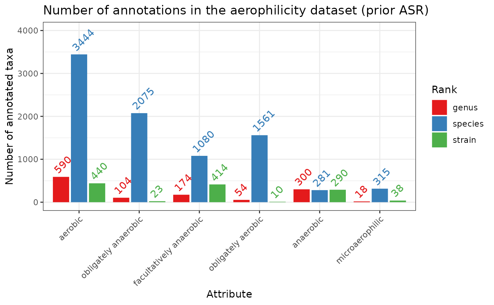

library(bugphyzzAnalyses)
library(taxPPro)
library(bugphyzz)
library(dplyr)
library(purrr)
library(ggplot2)
phys <- map(physiologies(), as_tibble)
df <- phys[['aerophilicity']]
df_summary <- df |>
filter(
Attribute != '',
Rank %in% c('genus', 'species', 'strain')
) |>
count(Attribute, Rank)
Attribute_order <- df_summary |>
count(Attribute, wt = n) |>
arrange(-n) |>
pull(Attribute)
df_summary |>
mutate(
Attribute = factor(Attribute, levels = Attribute_order, ordered = TRUE)
) |>
ggplot(aes(Attribute, n)) +
geom_col(
aes(fill = Rank), position = position_dodge2(0.9, 'single')
) +
geom_text(
aes(label = n, color = Rank),
position = position_dodge2(0.9, 'single'),
angle = 45, hjust = 0, vjust = -0.5
) +
labs(
title = 'Number of annotations in the aerophilicity dataset (prior ASR)',
y = 'Number of annotated taxa'
) +
scale_fill_brewer(type = 'qual', palette = 'Set1') +
scale_color_brewer(type = 'qual', palette = 'Set1') +
scale_y_continuous(limits = c(0, 4000), breaks = seq(0, 4000, 1000)) +
theme_bw() +
theme(
axis.text.x = element_text(angle = 45, hjust = 1)
)
#> Warning: Removed 1 rows containing missing values (geom_col).
#> Warning: Removed 1 rows containing missing values (geom_text).